Today
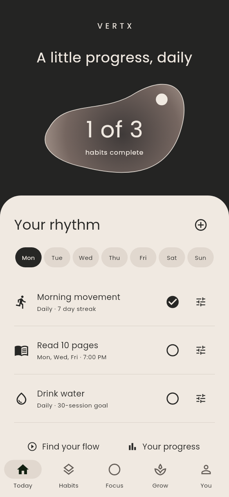
Implemented Flutter layouts with demo data. Click a screen for its full-size image.

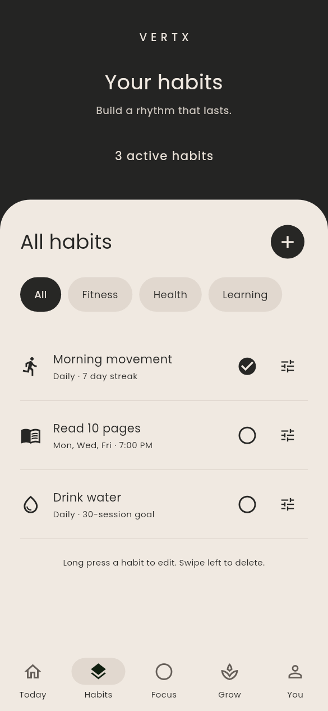
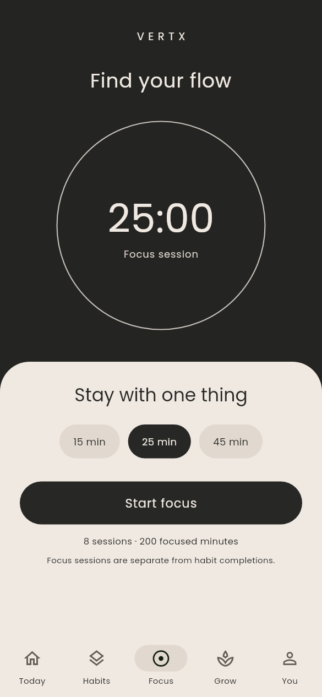
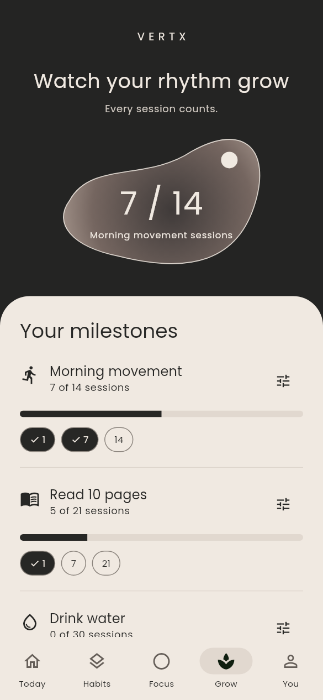
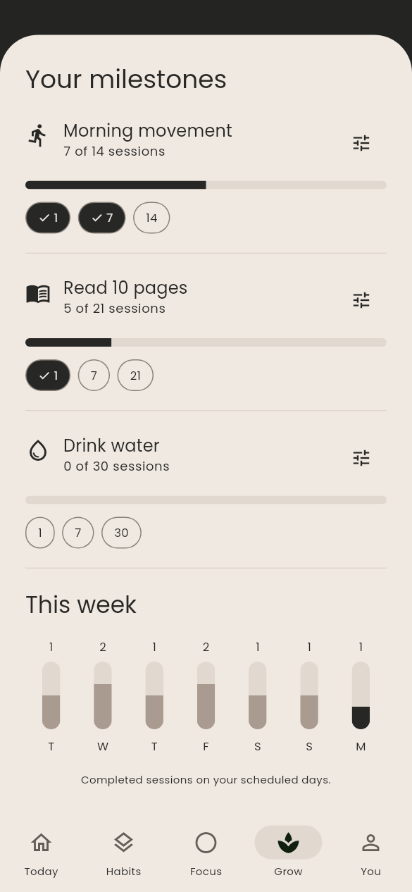
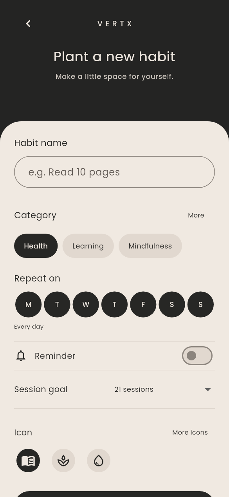
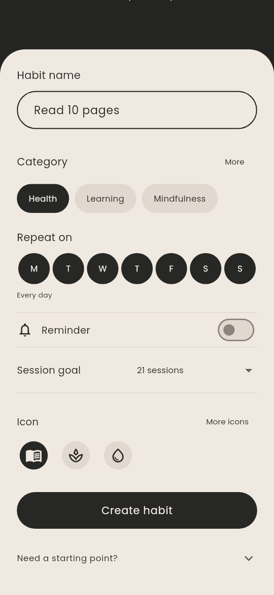
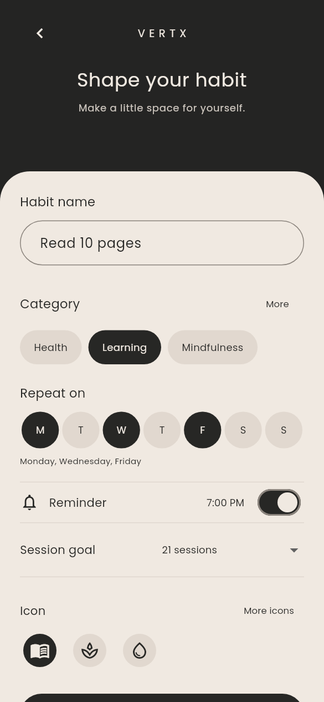
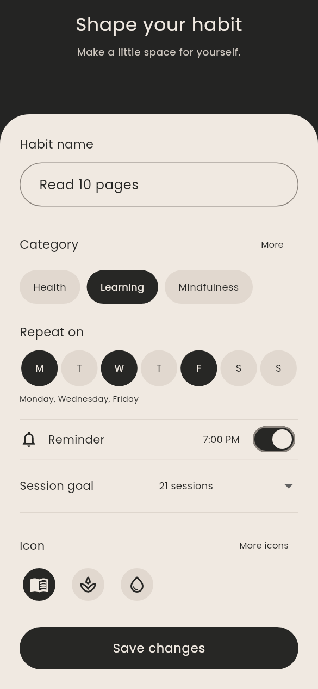
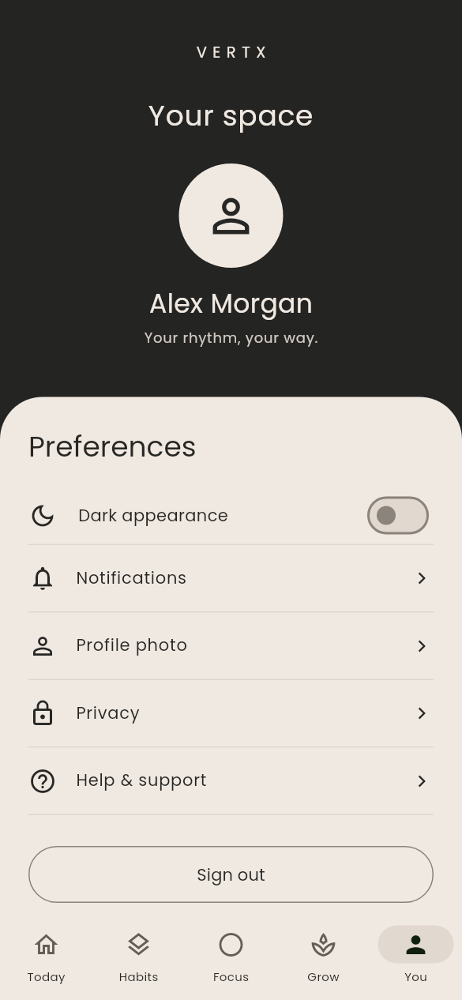
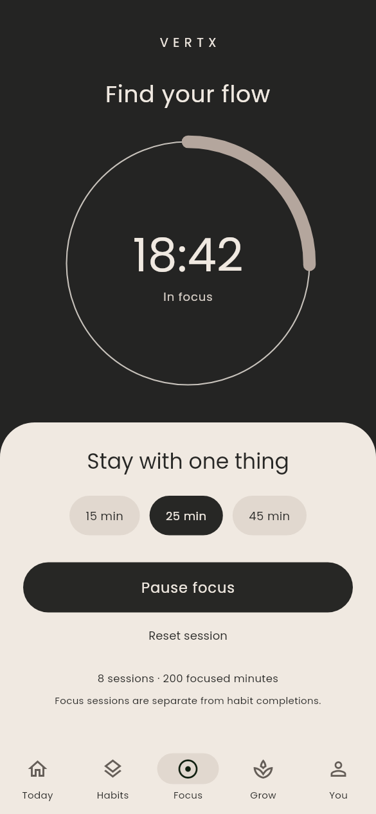
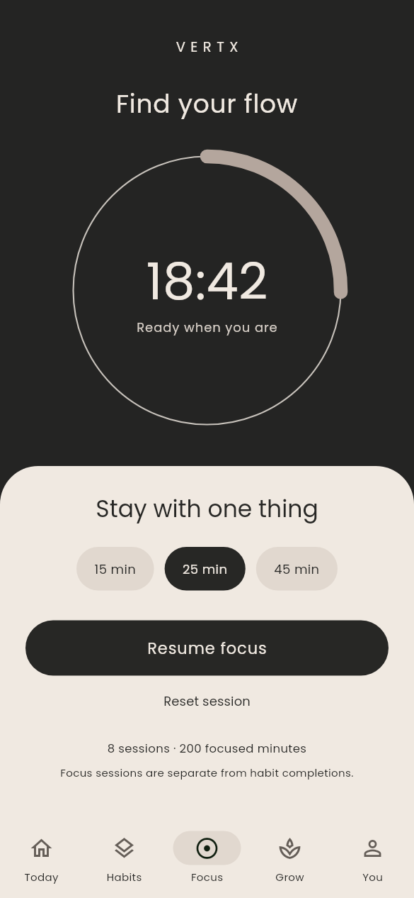
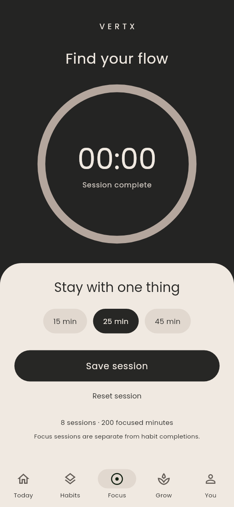
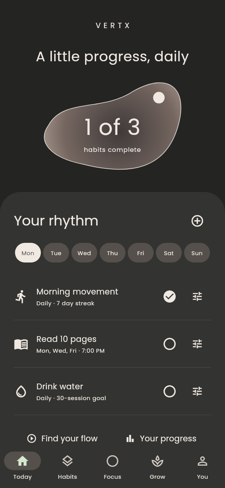
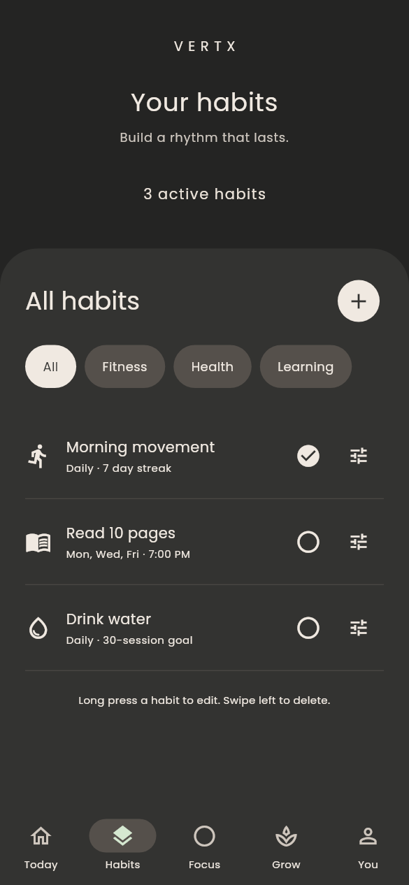
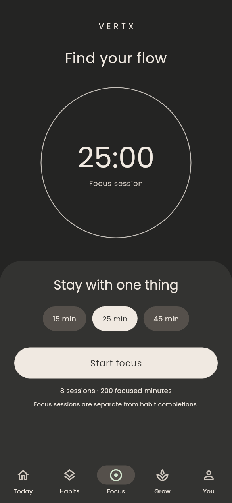
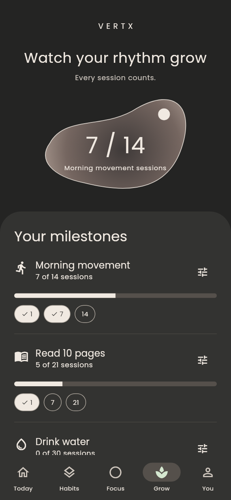
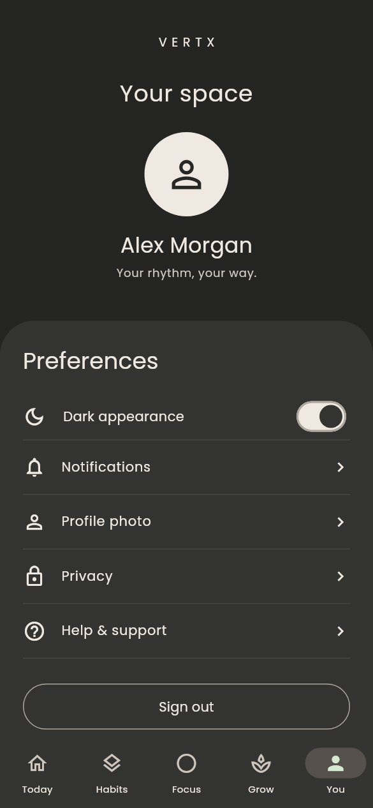
Live Firebase sign-in and device notification delivery still require native device testing. These previews are generated from the production widgets.